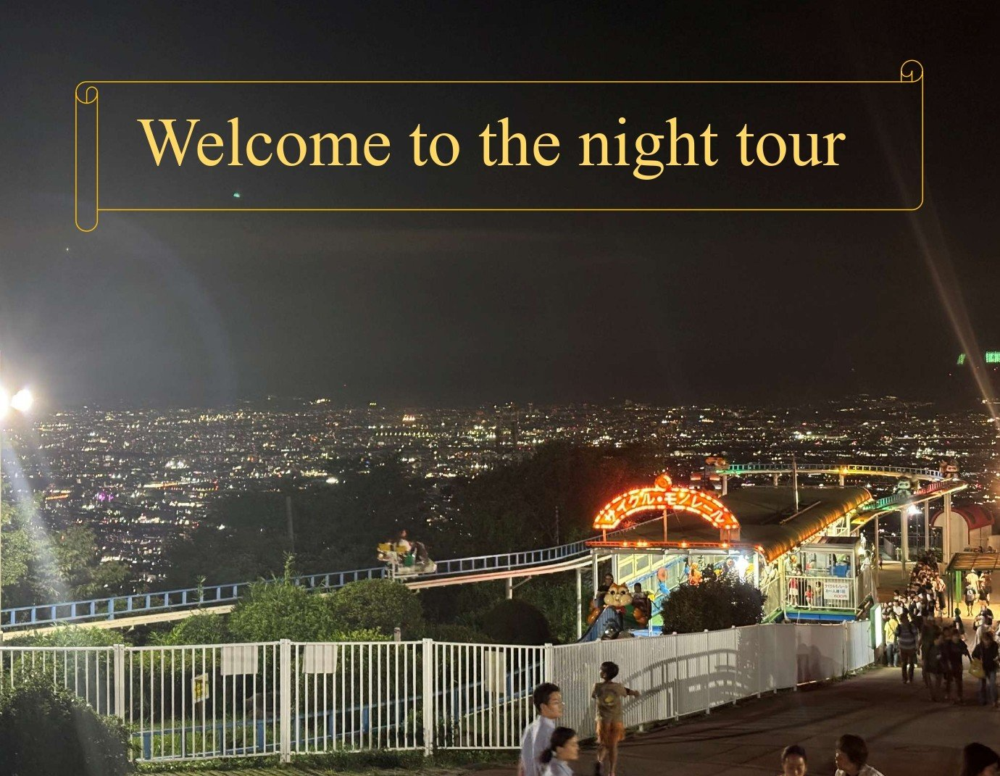

荒本駅 · Kintetsu Keihanna Line / Osaka Metro Chuo Line
You're at the foot of tonight's first stop: Higashiosaka City Hall, home to one of the region's best free night views. From here the evening climbs toward Mt. Ikoma, then eases back down into the old shrine town of Ishikiri.

Open Aramoto Station in Google Maps